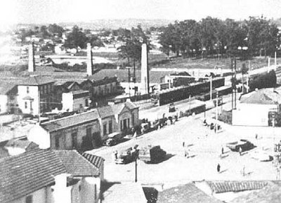

É através das escrituras lavradas em Cartórios de Notas que se pode saber quem eram os proprietários das terras osasquenses, a partir de 1880.
Falando especificamente do km 16 da Estrada de Ferro Sorocabana, podemos dizer também que a compra e venda, partilha e outros instrumentos jurídicos, começaram a aparecer em 1881. Com base nas informações colhidas nesses documentos, podemos afirmar que: no km 16 da Ferrovia Sorocabana, criava-se e engordava gado em 1880. E os animais eram vendidos para São Paulo ou Santana de Parnaíba. Além do gado, nos sítios, normalmente de 80 a 120 alqueires, eram plantados milho, mandioca e cana-de-açúcar.
Não era difícil plantar e criar em área não muito extensa e com um ou dois escravos e um engenho de farinha ou de cana. Com esses bens, conseguia-se uma renda de subsistência razoável para a sociedade da época.
A grande maioria dos proprietários das terras do km 16, nesse período, tinha também propriedades em outras cidades do interior. É o caso do Dr. Jaguaribe, proprietário do sítio Bussocaba, que plantou um bosque de eucaliptos em suas terras sáfaras e áridas, mas possuía propriedades em São Paulo.
Já a família do Dr. Fortunato José de Camargo, proprietária do sítio da Campesina, tinha cercados, pastos e plantações. Porém, seu meio de vida provinha da fazenda em Faxina onde tinha suas cabeças de gado.
Até 1890, é muito complicado saber ao certo o que tinha e o que produzia cada propriedade no km 16. Até porque as especificações da venda ou hipoteca em cada escritura varia de proprietário para proprietário, já que estes documentos eram escritos através do ditado dos interessados.
A legislação não exigia mais que a demarcação clara da localização das terras. Ou seja, as pessoas estavam mais preocupadas em especificar as divisas de suas propriedades e não os bens e meios produtivos que tinham. Para dar um exemplo mais claro, vamos especificar o corpo da escritura de compra e venda que faz Francisco Corrêa Cerpellos a João Pinto Ferreira.

“É Senhor e legal possuidor de um sítio denominado
Bussucaba, com porto de campo e matas, no distrito
da Freguesia da Consolação... O qual sítio confina do
seguinte modo: principia no ribeirão Bussucaba e
desce pelo mesmo até desaguar no Rio Tietê, pelo qual
desce até onde deságua o Ribeirão João Alves, e segue
por este acima até encontrar um valo, que divide com
terras de Balthasar Rodrigues de Borba, a terminar
na nascente de um pequeno arroio, e por este abaixo,
deságua no ribeirão Bussucaba, e por este abaixo até
o ponto de partida”.
Essa escritura foi lavrada em 8 de outubro de 1881. Já uma outra escritura de troca entre João Pinto Ferreira e José Manuel Rodrigues é menos elucidativa ainda, quando se trata de determinar qual a parte do todo do sítio Bussucaba que se passou a chamar "Ilha de São João".
Casa da época João P FerreiraNada é muito fácil de achar quando se esconde atrás dos véus do passado. A única coisa certa neste período eram as mudanças rápidas no km 16 da Sorocabana, tanto quanto na vizinha São Paulo. Questionando um pouco a existência desta “Ilha” dentro do sítio Bussucaba, vamos descobrir que não é de todo inviável a existência geográfica deste local, já que o bairro Rochdale é uma “ilha natural do Tietê”.
O interesse de compra, venda ou permuta em qualquer lugar próximo ao rio Tietê era por causa da argila, matéria-prima das olarias. E, de fato, alguns anos depois, nesse local, surge a olaria de João Pinto Ferreira.
Foi em janeiro de 1884 que João Pinto Ferreira hipotecou a José Mariano o sítio Bussucaba. Com este dinheiro em mãos, provavelmente comprou tijolos para construir o seu forno caipira e aproveitar a argila que havia no sítio. Era uma forma de garantir a entrada de dinheiro em um dos negócios mais promissores da época: as olarias.
Para escoar a sua produção, haviam as barcas, que navegavam no Tietê. Podia também transportar de carroça pela estrada providencial São Paulo-Itú, atual avenida dos Autonomistas. Ou ainda construir uma plataforma para carregar sua produção em trens, o que, na época, era mais rápido e seguro.
Acertar ou não em um determinado negócio é uma questão de experiência, neste ou naquele ramo. E João Pinto Ferreira era um comerciante de secos e molhados, não oleiro ou empreiteiro. Ainda assim, um empresário que investiu bastante no sítio "Ilha de São João" nos seis anos em que foi proprietário. Muito provavelmente vendeu o sítio por causa das dívidas.
Quando o sítio "Ilha de São João" foi vendido tinha: uma olaria, um moinho de farinha, gado, videiras, banana, um pórtico à margem da estrada de ferro, muitas ferramentas para trabalhar com a terra e muito gado perdido pelo meio do mato. Coisas que João Pinto Ferreira não comprou de Francisco Corrêa Cerpellos, mas vendeu para o italiano Antônio Agu junto com o sítio.
Antônio Agu Antes de Osasco
Antônio Agu Nasceu em 25 de outubro de 1845, às nove 9 horas, em Osasco, Itália. Filho primogênito dos lavradores Antônio Giuseppe de Pietro Agu e Domênica Vianco. Batizado por seu tio Dom Michele Vianco, recebeu o nome de Antônio Giuseppe Agu.
Não deve ter tido uma infância ou adolescência difícil, pois a crise econômica italiana principiou quando por ocasião do casamento de Antônio Agu com Teresa Maria Benvenutta Chiaretta, isto é, em 1870.
Dessa união, nasceu a menina Primitiva Domênica Michela Agu, em 22 de julho de 1872. Conforme informações contidas no histórico da Cúria Metropolitana da Cidade de Osasco, na Itália, foi nesse mesmo ano que Antônio Agu migrou para o Brasil.

Muitas foram as razões que trouxeram os italianos para as Américas. A Itália se unificou em 1870, e foi resultante desse processo político social as causas para migrar. “O confisco de propriedades por falta de pagamento de impostos, esgotamento da terra, relações pessoais entre trabalhadores e proprietários, crise agrícola, desflorestamento, política comercial, proteção a navegação e crise de disponibilidade alimentícia”.
O Brasil dessa mesma época tinha outras crises: falta de braços para substituir o trabalho escravo que, após o término do tráfego negreiro e a guerra do Paraguai, tornaram-se escassos, e falta de mão-de-obra qualificada para trabalhar na indústria nascente.
As fronteiras do café se alargavam para o oeste paulista e os braços para tocar as plantações minguavam. Assim, a saída mais viável era a substituição do braço escravo pelo assalariado.
Antônio Agu veio para o Brasil no mesmo ano do nascimento de sua filha, e começou a trabalhar na construção da Estrada de Ferro na cidade de São João do Capivari, interior de São Paulo. Foi um dos muitos que prosperaram graças às suas terras roxas.
Assim, a troca de seu meio de produção não o tornou totalmente industrial, mas ajudou o município a prosperar e seguir a evolução dos tempos.
“Neste ano de 1881, a lavoura de café em São João do Capivari está começando, e para proteger esta lavoura das possíveis geadas os terrenos baixos não são cultivados, ali são deixados revestidos de mato virgem abundante e com árvores de preciosa madeira. O único rio que atravessa o município é o Capivari. Os demais riachos e ribeirões servem para irrigar a lavoura. A maior parte da terra roxa ainda deixa espaço para que as terras menos nobres, como as que se extrai argila, os barreiros, o calcário e a brita coabitem em seu espaço...”
Com tanta riqueza, o povoado não tardou em virar freguesia, e desta a condição de cidade foram apenas 44 anos de trabalho. Ou seja, Capivari tornou-se cidade em 22 de abril de 1864.
Ainda em relação a esse progresso, é preciso somar a chegada da estrada de ferro, em 21 de outubro de 1875, e o engenho central, que começou a ser construído em 1881.
Como se pode observar, esta cidade carecia de mão-de-obra especializada e não podia parar seus largos passos em direção ao novo século só pela falta de escravos. Além disso, escravos trabalhavam bem na lavoura, mas não eram hábeis no uso da máquina a vapor para o beneficiamento de grãos de café, algodão, milho e arroz. Também não tinham prática em usar máquina para formatar telhas e tijolos nas olarias. A tecnologia estava ao alcance de qualquer agricultor e, caso quisesse veículos, máquinas e instrumentos para a sua lavoura, era só pedir ao mecânico Henrique de Araújo que ele fabricava em sua ferraria - muito bem montada no centro de São João do Capivari. Eram todos esses avisos de novos tempos, de desenvolvimento, que nem ao menos a cidade de São Paulo tinha, e Antônio Agu residindo nesta cidade do século XX.
A narrativa serve para
explicar, documentalmente, que o progresso que
Antônio Agu daria às suas terras, no km 16 da
Sorocabana em São Paulo, nada tem a ver com
Osasco, Itália. Mas sim, com São João de Capivari,
onde viveu os seus primeiros 14 anos no Brasil.
A Itália que Antônio Agu deixou para trás não prometia
nada a seus filhos e também não tinha nada a oferecer
para o futuro próximo.
Em relação ao dinheiro para comprar a olaria de João
Pinto Ferreira e depois o sítio, também são provenientes
da construção do Engenho Central de Capivari.
Antônio Agu já tinha uma propriedade na cidade de São João de Capivari, quando resolveu se estabelecer em São Paulo.
Esta resolução pode ter sido tomada por muitas razões. Mas, entre elas, certamente está o ideal de realizar o sonho de construir um bairro.
São Paulo começava sua metamorfose de cidade para a megalópole que hoje conhecemos. Muito provavelmente, Antônio Agu, que em 1887 tinha 42 anos, já havia aprendido, economizado e amadurecido seus ideais. Era tempo de novos rumos, de novas buscas. E ele não foi o único nem o primeiro dos italianos que se mudou para a cidade de São Paulo, onde a população italiana passou, entre 1872 e 1886, de 8% para 25% do total de habitantes.
São Paulo deixava de ser apenas o pólo político da província para se tornar também uma cidade desenvolvida, economicamente vibrante, dinâmica e impaciente.
Os braços italianos invadiam os meios de produção. Pequenos comerciantes, artesões, operários, têxteis, engraxates, vendedores ambulantes e oleiros. A cidade já tinha fábricas de tecidos, calçados, gêneros alimentícios e olarias. O panorama urbano era rápido e vertiginosamente mudado. Faltava moradia para a população que, em 1886, era de 8.269 pessoas, e em 1890, passou para 13.337 só no distrito da Consolação.
Os apelos de mudanças não eram poucos, e maiores eram os atrativos para sair de São João do Capivari e vir para São Paulo.
No km 16 da Ferrovia Sorocabana, o desenvolvimento das olarias também caminhava em ritmo de São Paulo. Já existiam as olarias de Delfino Cerqueira, João Pinto Ferreira e João Brito (Olaria São João). Até a de José Manuel Rodrigues estava instalada no ano de 1887.
É interessante observar o comentário de Alice Canabrava em seus estudos sobre as chácaras paulistanas: “(...) encontra-se também a atividade agrícola ligada a uma produção industrial baseada no solo, a fabricação de telhas e tijolos. Nessas chácaras, a olaria encontra-se associada ao pomar de árvores frutíferas em geral, e até há videira, para a fabricação de vinho (...)”. E a propriedade comprada por Antônio Agu tinha exatamente o perfil de chácara paulistana definida por Alice Canabrava. A raridade está no fato de o sítio "Ilha de São João" ter sido a primeira propriedade da região do km 16 vendida a um italiano. Aliás, por um bom tempo, até 1902, este foi o único sítio que passou de mãos brasileiras para de estrangeiros.